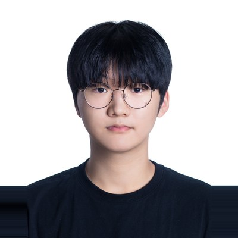
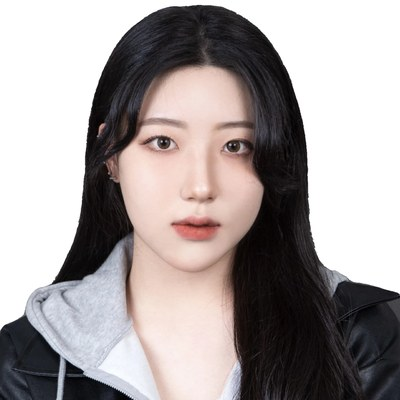

팀원 · 누가 무엇을 했나
지금까지 보여 드린 것을 한 사람들 · 팀 네잎클로드
시장 조사
단계별 로드맵
제휴 전략
수익 모델
가격 구조
설문조사 진행
학습 데이터 수집

영우발표 · 모델 학습 · 백엔드발표자료 제작
발표
마크 모델 파인튜닝
학습 DB 구축
서버 · AI 연결
모바일 최적화
학습 데이터 수집

현미마케팅 · 기획 · 백엔드인스타 운영
인터뷰 진행
화면 기획
서버 기능 구현
공공데이터 위치 실험
학습 데이터 수집
TRAIN/TEST 데이터 분할
학습 DB 구축
데이터 라벨링
화면 기획
웹 페이지 개발
학습 데이터 수집
AI 모델 데이터 분석
데이터 인식 고도화
데이터 라벨링
화면 구현
발표자료 제작
학습 데이터 수집